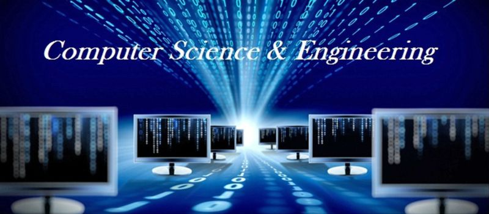

COMPUTER SCIENCE & ENGINEERING

The Department of Computer Science & Engineering, established in 1986, offers UG, PG and research (leading to M.Sc. and Ph.D.) programs. The Department practices outcome-based education since 2014. With state-of-the-art laboratories and other supporting facilities to provide enhanced learning environment, the Department boasts of well qualified teaching faculty with rich research, teaching and industrial experience.
The Department has excellent placement track record in reputed industries with an average of 80 – 85% placement of eligible students over the years. The Department regularly conducts audit courses, and special courses on advanced topics, to bridge the gap between the curriculum and the need of the industry. The Department offers M.Tech programs in Computer Science & Engineering and in Software Engineering (autonomous under VTU) from the academic year 2003-04 and 2015-16 respectively. From the year 2022-23 M.Tech program is under Nitte University.
FACILITY
Laboratory
The department has well-equipped state of the art Laboratories which includes:
Advanced Programming Laboratory
Application Development Laboratory
Data Structures / Algorithms laboratory
Microprocessors & Microcontroller Laboratory
Network / RDBMS Laboratory
Systems Programming Laboratory
Web / Unix Programming Laboratory
Logic Design Laboratory
Research / PG Laboratory
Computer Programming Laboratory
MAJOR EQUIPMENTS
Boston AI/Deep Learning Server with 2xP100 12GB GPU, 128GB (8 no x 16GB) DDR4 ECC Reg. 2400MHz DIMM, 1x Intel Xeon E5-2609V4 8C 1.7GHz 20M 6.4GT/s, 2 no x NVIDIA Tesla P100 GPU – 12GB.
Intel(R) CoreTM i7-2600 CPU @ 3.40 GHz Computers with NVIDIA GTX470 Cards.
CISC Server: HPML150G6 Server HP, Power-RISC Model: IBM:Server1:9110 Model 51A IBM Power.
C-Dell Optiplex 3050 Mini Tower 16GB RAM, 1TB Hard Disk, IntelCore-i5 Processor 3.40GHz, Dell USB Mouse and Keyboard.
Five Intel(R) Core TM i7-2600 CPU @ 3.40 GHz Computers with NVIDIA GTX470 Cards
Three CISC Server: HPML150G6 Server HP, Power-RISC Model: IBM: Server1:9110 Model 51A IBM Power
X-86 CISC Quad Core Processor: HP Z600 Workstation Base Unit (Intel Xeon E5520 2.268 MB / 1066 QC CPU-1)
HP 280 G1 MT Business PC Intel Core i5 Processor 4/8 GB RAM, 500 GB HDD
Acer Power Series Intel® Core™ 2 Duo 1.86GHz,1/2/3GB RAM, 160GB HDD
IBM Think Centre Desktop, Intel ® Pentium D, 512 MB RAM, 80GBHard Disk
HP Compaq 6200 Pro Micro Tower, Intel Core i5-2400 Processor3.10GHz, 4GB RAM, 1TB Hard Disk
HP Pro Desk 400 G2 MT, Intel® Core(TM) 5–4570S, 4GB RAM, 500GB HDD